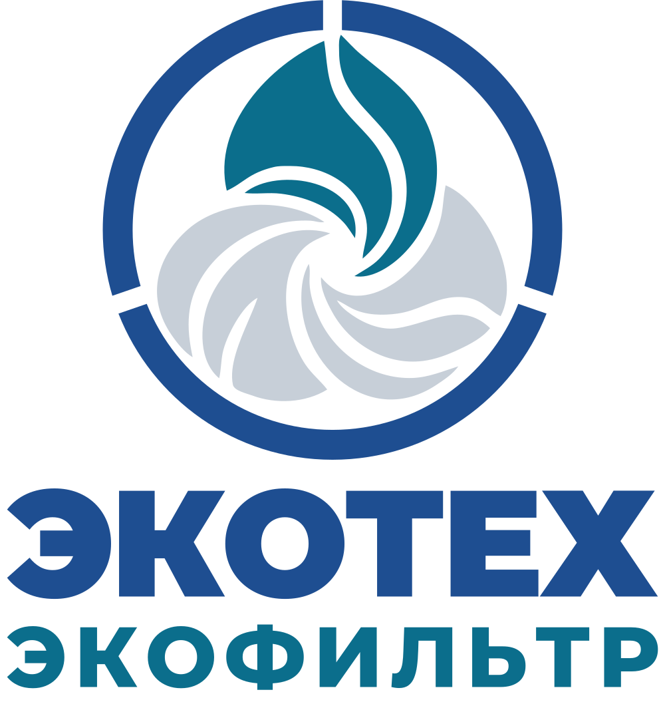
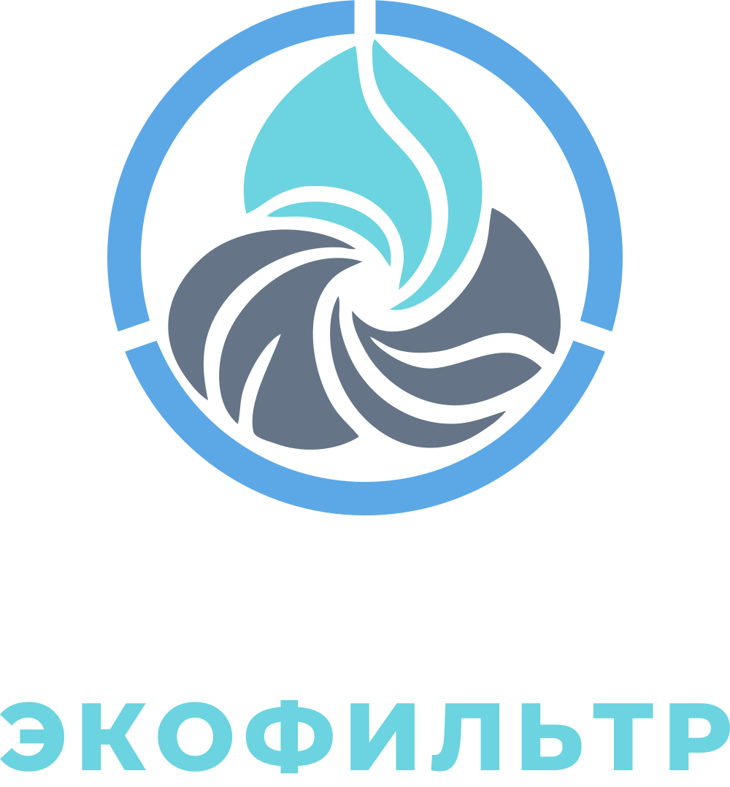
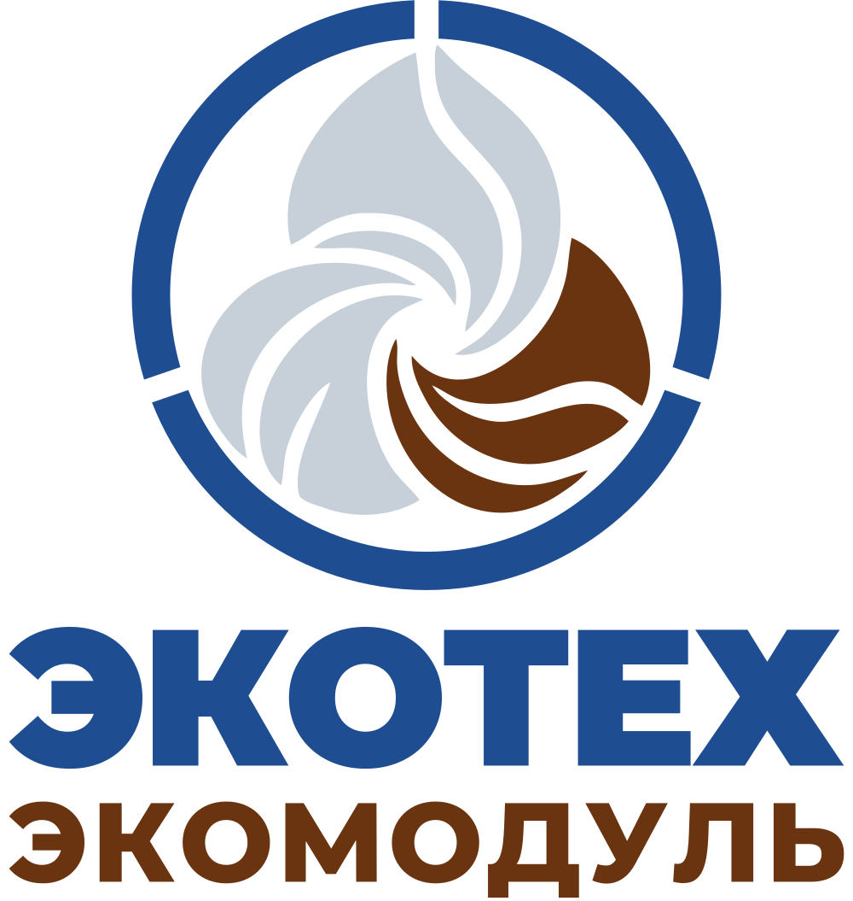
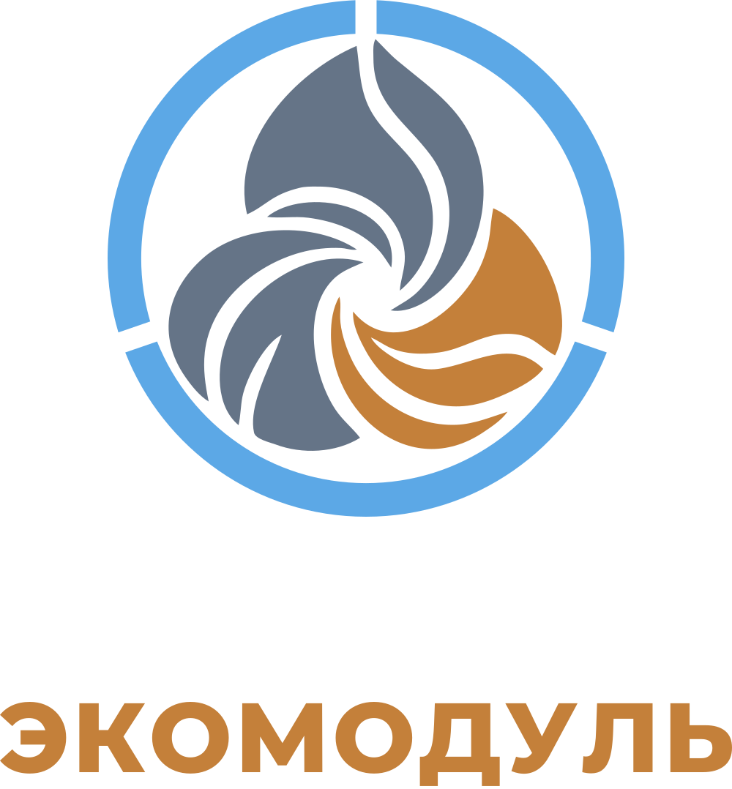
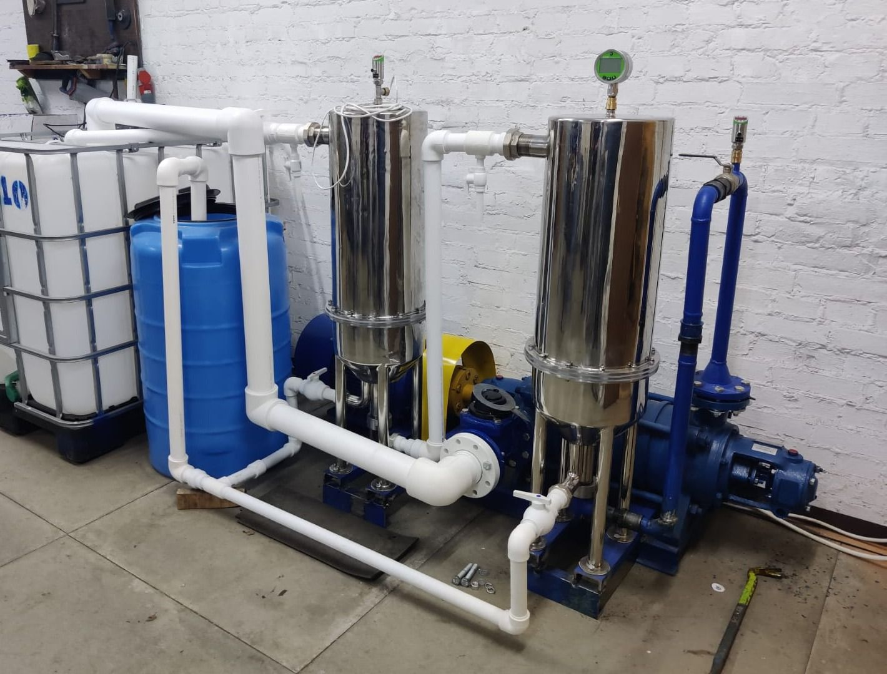

О компании
ЭКОТЕХ разрабатывает модульные решения для водоподготовки и получения тепла из отходов
Работу оборудования проверяем на объекте — лабораторными анализами и данными приборов.
Решения
Что мы делаем


Вода
Обрабатывает воду на объекте. Железо в воде из скважины — с 0,92 до 0,05 мг/дм³ по протоколу лаборатории.


Тепло из отходов
Установка для получения тепла из пригодных отходов. Тепловые показатели предстоит подтвердить.
Концепция
Проектная концепция совместной системы: водоподготовка, тепло из отходов и учёт на одном объекте.
Принципы работы
Как мы работаем с заказчиком
Обследование объекта
Изучаем объект до того, как предложить решение.
Независимая проверка
Качество воды и выбросы подтверждает аккредитованная лаборатория.
Приёмка по измерениям
Показатели и места измерений согласуем заранее.
Конфиденциальность данных
Данные заказчика публикуем только с его согласия.
Компания
Сведения о компании
Организация
- Наименование
- Общество с ограниченной ответственностью «ЭКОЛОГИЧЕСКИЕ ТЕХНОЛОГИИ»
- Сокращённо
- ООО «ЭКОТЕХ»
- ИНН / ОГРН
- 5032370758 / 1235000143278
- Адрес
- 143180, Московская область, Одинцовский городской округ, посёлок Института физики атмосферы (ИФА РАН), строение 5
Руководство и связь
- Генеральный директор
- Цозик Иван Михайлович
- Телефон
- +7 916 278-87-84
- Общие запросы
- info@ecotechnew.ru
- Реквизиты
- полные реквизиты
Оборудование
Стенды и опытные образцы


Стенд Экофильтра на площадке ЭКОТЕХ в п. ИФА РАН и опытно-промышленный образец Экомодуля РМ-1 на исследовательской площадке. Пробы воды до и после очистки анализируют сторонние лаборатории.
История
Как развивались решения
- 2021
Разработаны технические условия на модульный регенератор для переработки углеродсодержащих отходов; образец испытан на соответствие требованиям безопасности ТР ТС 010/2011.
- 2019
Депонирована научно-практическая разработка экологических модулей регенерации отходов в профильной организации по защите интеллектуальной собственности.
- 2023
Зарегистрировано ООО «ЭКОТЕХ».
- 2025
Экофильтр выпускается по ТУ 28.29.12-001-70473237-2025, зарегистрирована декларация о соответствии ТР ТС 010/2011; на стенде получены протоколы анализов поверхностной воды и хоз-бытовых стоков до и после очистки; опытно-промышленный образец Экомодуля РМ-1 в контейнерном исполнении проходит запуски на исследовательской площадке.
- 2026
Протоколы анализов воды из скважины до и после Экофильтра: вода после очистки соответствует СанПиН 1.2.3685-21 по проанализированным показателям.
Обсудим вашу задачу
Расскажите об объекте — ответим и пришлём перечень исходных данных.